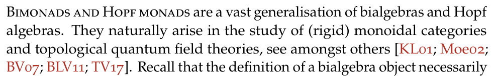

13th Apr 2025–8 Feb 2026
· 9 min read ·
#LaTeX
Dissertation Typesetting Considerations
Contents
The thesis is available here,
and you can also check out the full source code.
For more information, also check here.
This post is also available as an
article
in TUGboat 46:3.
I’ve made the source code
for the LaTeX version available as well.
which is more or less the culmination of the last three and a half years of my (mathematical) life.
While the maths itself is perhaps relatively inaccessible to the general public,
some of the typesetting considerations that went into the document might not be.
For reference, here are a few pages of how the end product looks like:

The document class§
I flip-flopped between the only two relevant contenders: memoir and koma-script (which features thescrbook class).
In the end, memoir won solely because I found the manual more pleasant to read,
and thus had an easier time customising things.It is also much more extensive. Both manuals clock in at around 600 pages,
but the memoir manual is only about one class!
There are also a bunch of concrete and extensive examples, which are very good to learn from.
I also had the feeling that memoir laid a more heavy emphasis on typographical considerations,
but this might be because I didn’t read the koma-script manual as closely.
This choice did probably not matter all that much in the grand scheme of things,
but I’m quite happy with memoir and would recommend it for any kind of book-length project.
The page layout§
The defaulta4paper page layout that memoir has is fine,
though \isopage—inspired by page dimensions suggested by Robert Bringhurst—yields a nicer looking printout in my opinion.
This is especially true with a slightly larger font size,
which is more or less mandatory if you have to print something in as big of a format as A4.
The different default page layouts for A4 paper, taken from the memoir manual.
 Being a little bit wider, it is also good for long-ish formulas and large-ish diagrams,
of which my thesis has more than enough.
Together with my chosen fonts below,
the final page layout results in a maximum of about 72 characters per line.
This is on the higher side of what I would prefer,
but either increasing the font size or decreasing the margins
would impede too much on the actual content,
so I kept it this way.
Sidenotes—much more on that later—are constrained to a maximum of around 21 characters via
Being a little bit wider, it is also good for long-ish formulas and large-ish diagrams,
of which my thesis has more than enough.
Together with my chosen fonts below,
the final page layout results in a maximum of about 72 characters per line.
This is on the higher side of what I would prefer,
but either increasing the font size or decreasing the margins
would impede too much on the actual content,
so I kept it this way.
Sidenotes—much more on that later—are constrained to a maximum of around 21 characters via
\setmarginnotes{17pt}{80pt}{\onelineskip}
Chapter headings§
For chapter headings memoir features abringhurst chapter style,
which however doesn’t include the chapter number beside it:
The famous book [Brin92] puts a rather large number in the margin,
which is also what I ended up going with (see the first double page in this post).
Thankfully, this is not difficult to fix—so much so that someone on TeX.Stackexchange has
already done it.
The exact bringhurst.sty file I used is here;
to use it just replace the call to \chapterstyle with a call to \usepackage:
\usepackage{bringhurst}% Instead of \chapterstyle{bringhurst}
The margin§
As you can probably tell from this website,Unless you’re on mobile, I suppose.
I love sidenotes.
Sadly, this is about where one hits their first bump,
in that memoir and the
sidenotes package
are incompatible.
For example, both define a \sidecaption command,
and both import changepage, although with different options.
However, LaTeX’s error messages are actually comprehensible in these cases,
so patching the sidenotes package is straightforward.
Here is the diff
diff --git a/sidenotes.sty b/sidenotes.sty
index df6a772..cdb866d 100644
--- a/sidenotes.sty
+++ b/sidenotes.sty
@@ -7,7 +7,6 @@
\RequirePackage{marginnote} % Provides an offset option for the marginals instead of a float
\RequirePackage{caption} % Handles the captions (in the margin)
\RequirePackage{xparse} % New LaTeX3 syntax to define macros and environments
-\RequirePackage[strict]{changepage} % Changepage package for symmetric twoside handling
\ExplSyntaxOn
\keys_define:nn { sidenotes }
{
@@ -88,51 +87,6 @@
}
{\@sidenotes@placemarginal{#2}{\textsuperscript{#1}~#3}}
}
-\DeclareCaptionStyle{sidecaption}{font=footnotesize}
-\NewDocumentCommand \sidecaption {s o o m}
-{
- \captionsetup{style=sidecaption}
- \IfBooleanTF{#1}
- { % starred
- \IfNoValueOrEmptyTF{#2}
- {\marginnote{\caption*{#4}}}
- {\marginnote{\caption*{#4}}[#2]}
- }
- { % unstarred
- \IfNoValueOrEmptyTF{#2}
- {\def\@sidenotes@sidecaption@tof{#4}}
- {\def\@sidenotes@sidecaption@tof{#2}}
- \IfNoValueOrEmptyTF{#3}
- {\marginnote{\caption[\@sidenotes@sidecaption@tof]{#4}}}
- {\marginnote{\caption[\@sidenotes@sidecaption@tof]{#4}}[#3]}
- }
-}
-\newsavebox{\@sidenotes@marginfigurebox}
-\DeclareCaptionStyle{marginfigure}{font=footnotesize}
-\NewDocumentEnvironment{marginfigure} { o }
-{
- \begin{lrbox}{\@sidenotes@marginfigurebox}
- \begin{minipage}{\marginparwidth}
- \captionsetup{type=figure,style=marginfigure}
-}
-{
- \end{minipage}%
- \end{lrbox}%
- \@sidenotes@placemarginal{#1}{\usebox{\@sidenotes@marginfigurebox}}
-}
-\newsavebox{\@sidenotes@margintablebox}
-\DeclareCaptionStyle{margintable}{font=footnotesize}
-\NewDocumentEnvironment{margintable} { o }
-{
- \begin{lrbox}{\@sidenotes@margintablebox}
- \begin{minipage}{\marginparwidth}
- \captionsetup{type=table,style=margintable}
-}
-{
- \end{minipage}
- \end{lrbox}
- \@sidenotes@placemarginal{#1}{\usebox{\@sidenotes@margintablebox}}
-}
\AtBeginDocument{%
\newlength{\@sidenotes@extrawidth}
\setlength{\@sidenotes@extrawidth}{\marginparwidth}
\sidenote command now works as expected;
I wrote a small wrapper that additionally sets sidenotes ragged left or right,
depending on the parity of the page.
\usepackage{sidenotes} % Local one.
\usepackage{mparhack}
\renewcommand*{\marginfont}{\scriptsize}
\renewcommand{\note}[1]{%
\sidenote{%
\scriptsize
\checkoddpage%
\ifoddpage%
\raggedright%
\else
\raggedleft%
\fi
{#1}%
}%
}
\sidecaption implementation of either memoir or sidenotes,
but chose to roll my own:
% Mandatory argument contains the label text and the label itself;
% the optional argument moves the label text around.
\renewcommand{\scaption}[2][0cm]{%
\marginnote{%
\vspace{#1}%
\caption{%
\checkoddpage%
\ifoddpage%
\raggedright%
\else
\raggedleft%
\fi
{#2}%
}%
}
}
\sidecaption to do what I want,
and I get more control over the actual typesetting on top of it.
The price one pays is that the usage of \scaption is a tad unintuitive,
in that the \label of the figure has to go inside of the caption:
\begin{figure}[htbp]
\centering
\tikzfig{the-figure}
\scaption[3cm]{%
The caption.%
\label{fig:the-label}%
}
\end{figure}
Additionally setup with the
caption package:
\usepackage{caption}
\captionsetup{%
style=base,%
labelfont=footnotesize,%
textfont=scriptsize,%
}
Another thing I did was pushing equation numbers into the margin. Instead of
 my thesis instead displays such an equation as
which in particular means that equation numbers are sometimes on the left of the page,
depending on where the margin is.
This is quite nice for larger diagrams or longer formulas,
which nevertheless still have to have an equation number.
Figures now neither need to intrude upon the margin,
nor be scaled quite so aggressively.
my thesis instead displays such an equation as
which in particular means that equation numbers are sometimes on the left of the page,
depending on where the margin is.
This is quite nice for larger diagrams or longer formulas,
which nevertheless still have to have an equation number.
Figures now neither need to intrude upon the margin,
nor be scaled quite so aggressively.
% Protrude equation numbers into the margin.
%
% Sources:
% - https://tex.stackexchange.com/questions/258574/placing-the-equation-number-in-the-left-hand-margin
% - https://www.overleaf.com/learn/latex/Page_size_and_margins
\makeatletter
\let\oldmaketag@@@\maketag@@@%
\def\oldtagform@#1{\oldmaketag@@@{(\ignorespaces#1\unskip\@@italiccorr)}}
\renewcommand{\eqref}[1]{\textup{\oldtagform@{\ref{#1}}}}
\newlength{\width@@}
\def\maketag@@@#1{\hbox{\hskip1sp\m@th\llap{%
\normalfont#1%
\settowidth{\width@@}{#1}%
\checkoddpage\ifoddpage\hspace{-\the\width@@-\the\marginparsep}
\else\hspace{\textwidth+\the\marginparsep+.1cm}\fi
}}}
\makeatother
Picking fonts§
For the default calligraphic font, I settled onboondoxupr from the excellently documented mathalfa package.
It changes the default Computer Modern alphabet
 to
to
 I also went ahead and chose a Fraktur font that is slightly less bold—
I also went ahead and chose a Fraktur font that is slightly less bold—esstix.
 However, much more important than that is a good text font.
For me, there are two top contenders here,
which is Libertinus—provided by the libertinus package—on the one hand
and Palatino—or a clone of it, in the form of newpx—on the other:
Libertinus has one critical flaw,
which is that the italic f extends way too far to the right.
This clashes quite significantly with
However, much more important than that is a good text font.
For me, there are two top contenders here,
which is Libertinus—provided by the libertinus package—on the one hand
and Palatino—or a clone of it, in the form of newpx—on the other:
Libertinus has one critical flaw,
which is that the italic f extends way too far to the right.
This clashes quite significantly with boondoxupr
 and the issue only gets exacerbated once microtype comes into play and squashes those spaces even more.
Palatino, while not perfect, fares much better here:
and the issue only gets exacerbated once microtype comes into play and squashes those spaces even more.
Palatino, while not perfect, fares much better here:
 As I didn’t want to manually check every occurrence of f at the end of a word and potentially add a thin space after it,
the choice was forced upon me.
As I didn’t want to manually check every occurrence of f at the end of a word and potentially add a thin space after it,
the choice was forced upon me.Update on 2025-09-13: I recently found out about the
There are lots of knobs to turn with the mathic option of the mathtools package,
which applies some italics correction to the \(…\) inline maths environment.
Using that, the above comparison becomes
which looks much better in both cases!
This means one again has the power—and pain—of choice.
I still think that, for this kind of technical text,
the look and feel of an old-style font such as Palatino just fits the general “vibe” better,
but your mileage may vary.newpxtext and newpxmath packages,
the full code looks like this:
\usepackage[osf,scosf,theoremfont,tighter,largesc,trueslanted,p]{newpxtext}
\usepackage[varqu,varl,scaled=.98]{zi4}% inconsolata for mono
\linespread{1.05}% A bit more leading
\usepackage{textcomp}
\usepackage[amsthm,upint]{newpxmath}
\usepackage[cal=boondoxupr,frak=esstix,frakscaled=0.95]{mathalfa}
tighter or the amsthm compatibility—while others might require some further explanation.
-
osfandscosfmake sure to enable oldstyle figures everywhere-is, even within small caps, andlargescslightly increases the size of small caps, to more accurately model the size used by Linotype’s version of Palatino (the default value here is really more petite caps than small caps). -
theoremfontchanges the default font used for the plain theorem style of amsthm, which I use for theorems, corollaries, and the like. It keeps the text itself in italics, but uses upright figures, parentheses, and punctuation symbols. For example, with this option, you get theorem statements like this instead of (notice the parentheses surrounding the numbering or the colon)
instead of (notice the parentheses surrounding the numbering or the colon)

-
puses proportional figures (numbers) instead of tabular ones.
In terms of microtype I’m actually quite happy with the default settings. I added a little bit more tracking to small caps and protrusion to sub and superscripts:
Don’t forget the usual incantation to disable protrusion for the table of contents, though:
\newcommand{\TOC}{
\microtypesetup{protrusion=false}
\tableofcontents
\microtypesetup{protrusion=true}
}
\usepackage[tracking=true,kerning=true]{microtype}
\SetTracking{encoding=*,shape=it*}{10}
\SetTracking{encoding=*}{10}
\SetProtrusion%
{encoding=T1,size={7,8}}
{1={ ,750},2={ ,500},3={ ,500},4={ ,500},5={ ,500},
6={ ,500},7={ ,600},8={ ,500},9={ ,500},0={ ,500}}
\SetExtraKerning[unit=space]{encoding=*}% Add space to {left,right}
% – —
{\textendash={100,100}, \textemdash={200,200}}
 into text like this
into text like this
 Quite subtle, but certainly noticeable, I think!
Quite subtle, but certainly noticeable, I think!
One important change has to be made to
biblatex when using a font’s oldstyle figures:
the references in the main text should nevertheless use
lining figures.
That is, instead of

we rather wantAlso pictured:
rubrication
and starting sections with a few bits of small caps,
which I think I picked up from Edward Tufte.
 Luckily, it’s pretty easy to change the field format:
Luckily, it’s pretty easy to change the field format:
\DeclareFieldFormat{labelalpha}{\liningnums{#1}}
Miscellaneous thoughts§
Small macros like the following (inspired by this answer) were rather large quality of life improvements:\makeatletter
\newtheorem*{rep@theorem}{\rep@title}
\newenvironment{reptheorem}[1]{%
\def\rep@title{\cref{#1}}\begin{rep@theorem}%
}{%
\end{rep@theorem}%
}
\makeatother
theoremstyle:
% Label should exist elsewhere.
\begin{reptheorem}{cor: pivotal_from_central_anti_central}
Let \(\cat{C}\) be a rigid monoidal category.
If \(\cat{C}\) admits a central Hopf monad \(\mathfrak{D}(\cat{C})\)
and an anti\hyp{}central comodule monad \(\mathfrak{Q}(\cat{C})\),
then it is pivotal if and only if
\(\mathfrak{D}(\cat{C}) \cong \mathfrak{Q}(\cat{C})\)
as monads.
\end{reptheorem}
amsmath environments work under the hood.
Plus, using cleveref saves one from having to define many different commands like reptheorem, repcorollary, and so on—no going around obsessively checking whether a theorem invariably became a proposition a while ago.
A general advice I have—and also got from an older PhD student—is to start early.
Thanks, Florian!
Even just streamlining and unifying notation takes more time than one thinks,
especially if one also cares at least an epsilon about typography.
What thankfully cuts down on the time needed is that LaTeX has been around for a long time,
and most package manuals (that I’ve read) are quite high quality,
so chances are that someone else will probably have solved your super specific problem already.
Still, start early.
Lastly, I will just leave the following very important bibLaTeX configuration here.
\DeclareDelimFormat{finalnamedelim}{% Force Oxford comma
\ifnumgreater{\value{liststop}}{2}{,}{}%
\addspace\bibstring{and}\space}
References§
[Brin92]
|
Robert Bringhurst: The elements of typographic style: Hartley & Marks, 1992 |
 Have a comment? Write me an email!
Have a comment? Write me an email!